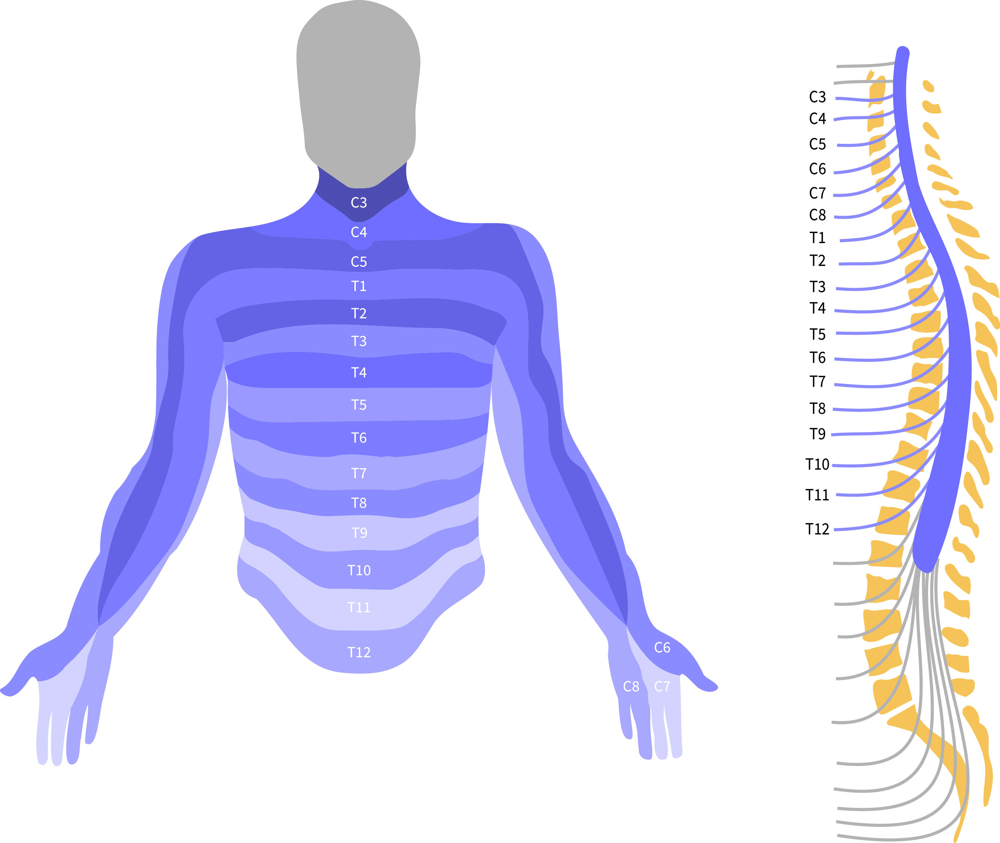

Understanding SCI
The spinal cord contains 31 segments. Each correlates with a section of the body.

Directions for muscle movements move from the brain to the body, traveling through the spinal cord until they reach the segment that contains the target muscles.
Sensory information traveling from the body to the brain travels from the segment in which it originates up the spinal cord to the brain, and must pass any other segments above it.
What does the spinal cord in the neck do?
As part of the central nervous system, the spinal cord is responsible for conveying information between the brain and the rest of the body. The section of the spinal cord within the neck is called the cervical spinal cord. There are 8 segments of the cervical spinal cord, with C7 being the most commonly injured.

Injury to C7 results in an individual losing the ability to straighten their elbow and move their wrist and hand.
Frequency of Spinal Cord Injuries
Spinal cord injuries are most often a result of traumatic injuries, such as car accidents or sports injuries, but can also be caused by factors such as infection or cancer.
- Spinal cord injury is common, with over 4000 new cases each year in Canada, particularly in young men below the age of 30.
- The most common site of injury is in the neck that results in paralysis of the upper and lower limbs (tetreplegia).
Spinal cord injury is associated with with an annual economic cost of almost $3 billion.
For an individual who is rendered tetraplegic, the estimated lifetime financial care cost is $3 million. However, if arm function can be restored, the financial care cost can be reduced by half.
Surgical Restoration of Elbow, Forearm and Hand Movements
Tendon transfer
Tendons of functional muscles can be used to power paralyzed muscles.
Examples of these include:
(FIGURE) i) Using tendons of the shoulder muscle to power the triceps to restore elbow extension.
(FIGURE) ii) Using tendons of muscles that bend the elbow to power muscles to extend the wrist and open the grip.
Nerve transfer
More recently, newer methods involving transferring redundant nerves have become additional treatment options. These nerves are considered dispensable as there are other nerves in the arm that serve similar functions. Therefore, the loss of function is minimal.
An advantage of nerve transfer is the restored movement is often more fluid and stronger compared to tendon transfer.